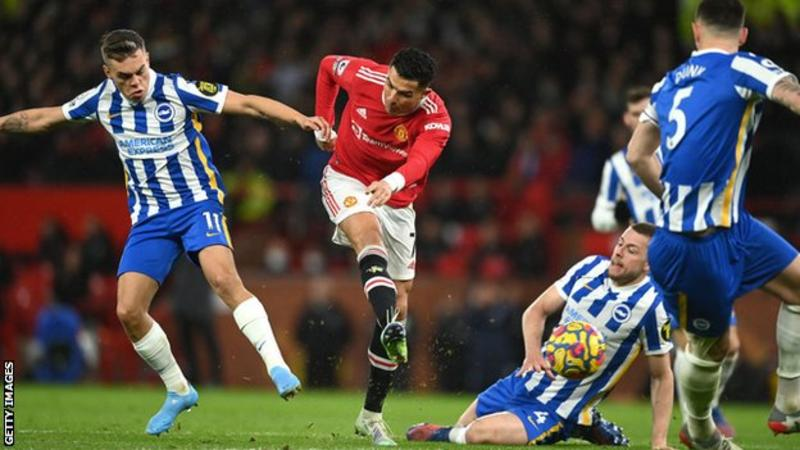
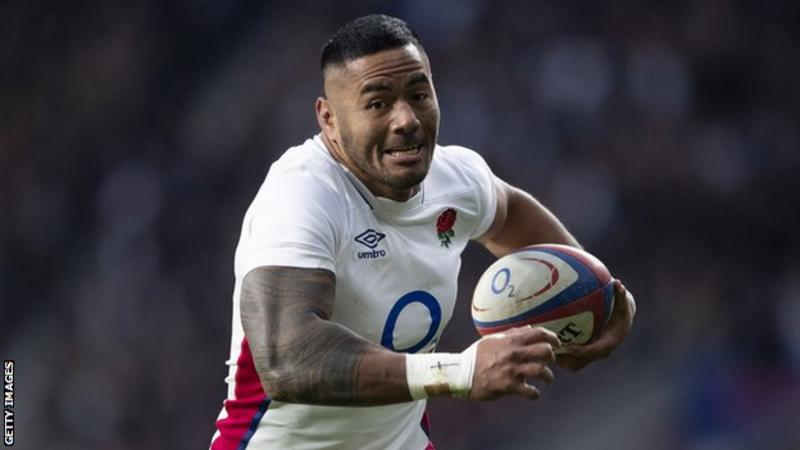
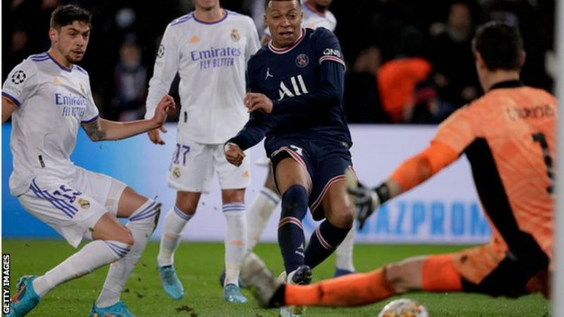
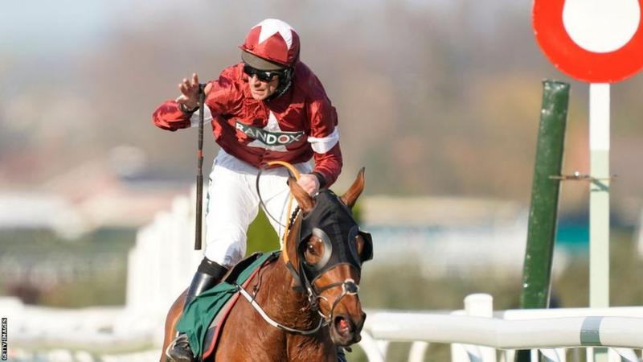
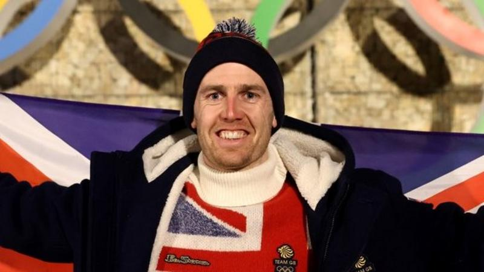
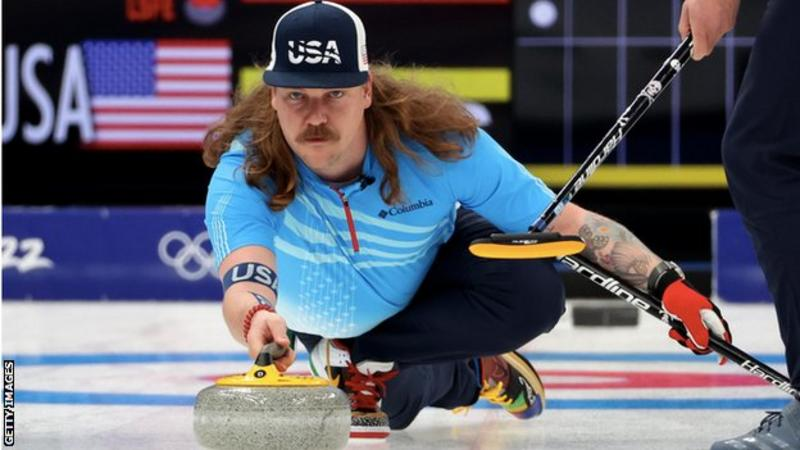

Cristiano Ronaldo ended his
six-game goal drought in sensational
style as Manchester United
beat 10-man Brighton at Old
Trafford to move back into
the Premier League's top-four.
Click the image to see the whole Story

Six Nations 2022:
England's Manu Tuilagi
returns from injury.
Click the image to see the whole Story

Kylian Mbappe scored his
22nd goal of the season
to give PSG victory.
Click the image to see the whole Story

Grand National: Tiger Roll
set to miss race
after Aintree weights revealed.
Click the image to see the whole Story

Winter Olympics: Dave Ryding says
it's do or die for
medal in Beijing.
Click the image to see the whole Story

Winter Olympics: American curler
Matt Hamilton growing
his hair to raise money.
Click the image to see the whole Story